꽃냉장고
꽃냉장고 디자인, 꽃집 인테리어와 어울리게 고르는 기준

꽃냉장고 디자인은 꽃이 얼마나 막힘없이 보이는지(유리와 프레임), 매장 톤과 어울리는지(외관 색·소재·조명), 공간에 꼭 맞는지(크기·선반 높이) 세 가지로 나눠 보시면 됩니다. 겉모습만 보고 고르기보다 냉기 순환과 접합 내구성까지 함께 확인해야 오래 예쁘게 쓰실 수 있습니다.
안녕하세요. 꽃집 매장의 분위기에 맞춰 꽃냉장고를 설계하고 제작하는 한성쇼케이스입니다.
꽃집을 오픈하거나 리뉴얼하시는 사장님들은 벽 색, 바닥재, 작업대까지 하나하나 고르셨는데 정작 꽃냉장고를 들여놓고 나니 매장 분위기와 어딘가 어긋난다는 말씀을 하십니다.
냉장고가 매장에서 가장 큰 가구인 경우가 많아서 그 차이가 더 크게 보이죠.
꽃냉장고는 꽃을 보관하는 장비이면서 손님이 매장에 들어와 가장 먼저 바라보는 진열장이기도 합니다. 그래서 디자인을 정할 때도 꽃이 어떻게 보이느냐를 중심에 두는 게 좋습니다.
오늘은 꽃냉장고 디자인을 인테리어와 맞출 때 어떤 순서로 정하면 좋은지 정리해 드리겠습니다.
1. 유리와 프레임, 꽃을 가리지 않는지
일반적인 꽃쇼케이스는 유리를 고정하려고 두꺼운 금속 프레임이나 실리콘을 씁니다. 튼튼하긴 하지만 손님 시선이 프레임에서 한 번씩 끊기고, 매장 전체가 다소 투박해 보일 수 있습니다.
프레임을 최소화하고 유리를 크게 쓰면 꽃이 매장 공간에 떠 있는 듯한 느낌을 줄 수 있습니다. 매장 가운데나 벽에서 떨어진 자리에 둔다면 뒷면까지 유리로 만들어 어느 방향에서도 꽃이 보이게 하는 구성도 많이 찾으십니다.
- 손님이 바라보는 방향이 몇 군데인지 정해 보세요.
- 프레임 두께와 유리 접합 방식을 물어보세요.
2. 외관 색과 소재는 매장 톤에 맞추기
우드와 화이트 위주의 내추럴한 꽃집이라면 밝은 프레임이 자연스럽게 섞이고, 콘크리트나 블랙 톤의 모던한 매장이라면 어두운 프레임이 꽃 색을 더 또렷하게 띄워 줍니다.
골드나 브론즈 계열 마감은 웨딩이나 고급 꽃다발 위주의 매장에 잘 어울립니다.
하부 기계실 쪽 마감도 놓치기 쉬운 부분입니다. 아래쪽만 다른 색으로 남으면 냉장고가 가구처럼 보이지 않으니 걸레받이와 하부 패널 색까지 함께 정해 주세요.
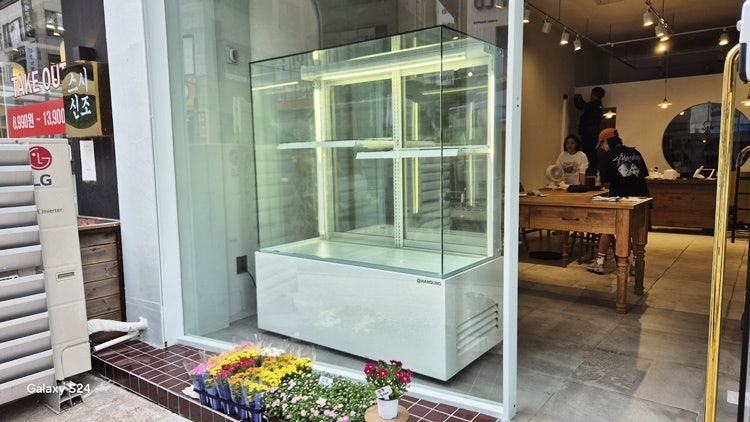
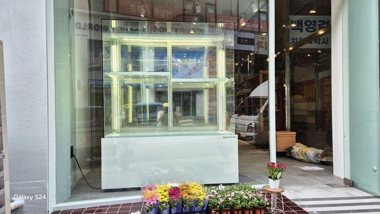
3. 조명 색온도와 선반 높이
같은 장미도 조명 색에 따라 분위기가 달라집니다. 매장 전체 조명과 색온도가 너무 다르면 냉장고 안만 동떨어져 보이니, 매장 조명 색을 기준으로 냉장고 조명을 맞추는 것이 좋습니다.
선반 높이는 진열할 꽃 종류로 정합니다. 키 큰 절화를 꽂아 두는 버킷 칸과 작은 꽃다발이나 화분을 올려 두는 칸을 나누면 안이 정돈돼 보이고, 손님도 원하는 꽃을 쉽게 찾습니다.
- 매장 조명 색온도를 먼저 확인하세요.
- 버킷 높이와 꽃대 길이를 재 두세요.
4. 공간에 꼭 맞는 크기와 내구성
매장마다 천장 높이와 기둥 위치, 동선이 다르기 때문에 기성품을 끼워 넣으면 애매한 틈이 생기거나 균형이 깨지기 쉽습니다.
도면과 실측을 바탕으로 가로, 세로, 높이를 맞추면 냉장고가 장비가 아니라 인테리어의 일부가 됩니다.
디자인이 아무리 좋아도 꽃은 온도와 습도에 민감한 상품입니다. 겉모습은 가볍게 보여도 내부 냉기 순환은 안정적으로 설계됐는지, 유리 접합부가 오래 써도 벌어지지 않는지 꼭 확인해 주세요.
체크리스트
- 프레임 두께와 유리 접합 방식
- 뒷면 유리 여부
- 외관 색·하부 패널 색
- 매장 조명과 맞춘 색온도
- 꽃 종류별 선반 높이
- 실측 기반 크기와 냉기 순환
UV 접합으로 프레임을 덜어 낸 하이엔드 꽃집 유리쇼케이스
사진 속 제품은 두꺼운 프레임 대신 특수 접착제로 유리와 유리를 직접 붙이고 자외선으로 굳히는 UV 접합 방식으로 만든 유리쇼케이스 냉장고입니다.
프레임이 거의 보이지 않아 어느 각도에서 봐도 꽃의 색과 형태가 그대로 전해지는 것이 특징입니다.
UV 접합은 정밀하게 계산하지 않으면 시간이 지나며 유리가 벌어지거나 냉기가 샐 수 있어, 숙련된 인력이 직접 공정을 관리합니다.
제작 전에는 매장 도면과 인테리어 콘셉트를 먼저 살피고 실측 치수에 맞춰 크기를 정했으며, 조명 색온도와 선반 높낮이도 꽃 종류에 맞게 설계했습니다.
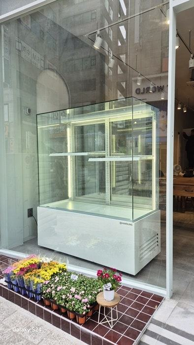
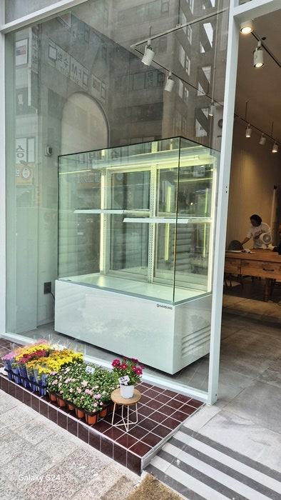
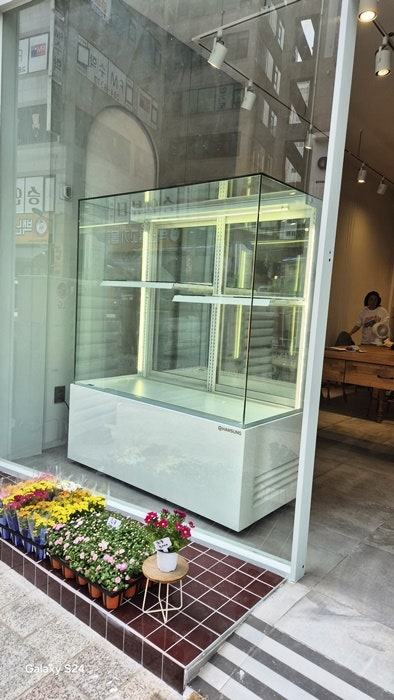
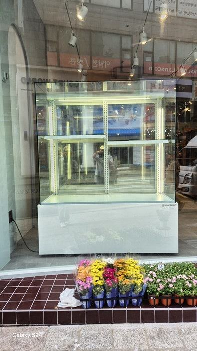
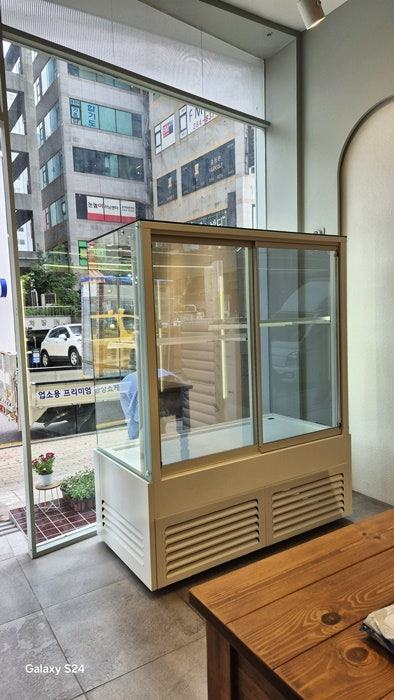
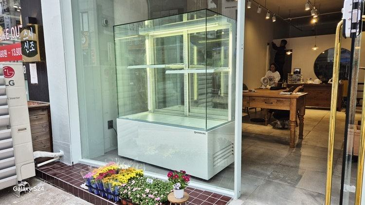
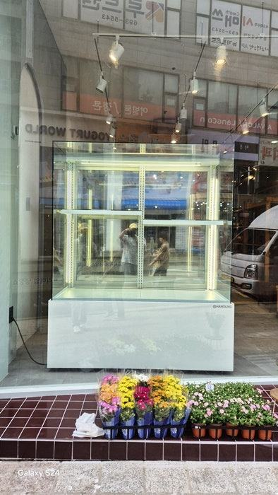
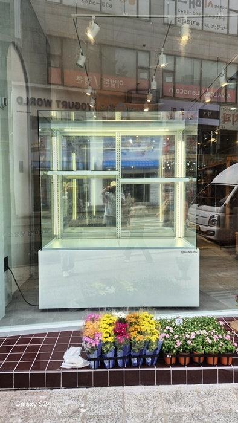
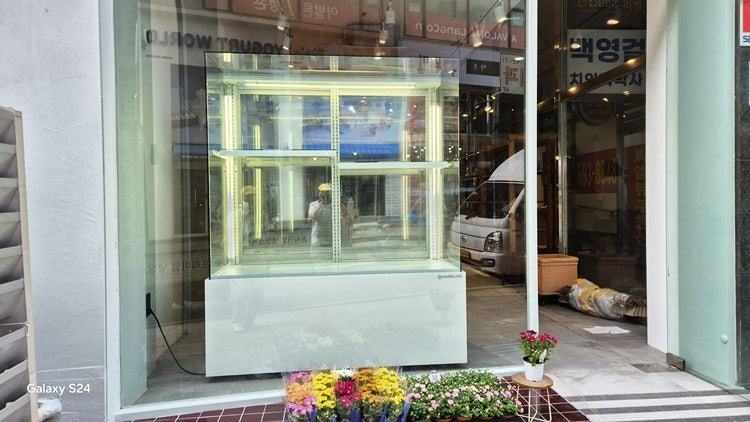

자주 묻는 질문
프레임이 없는 유리 꽃냉장고는 약하지 않나요?
접합이 정밀하게 이루어지면 일상적인 사용에 문제가 없도록 제작됩니다. 다만 공정 관리가 중요한 방식이라 제작 경험과 접합 방식을 꼭 확인해 보세요.
외관 색을 인테리어 자재에 맞춰 바꿀 수 있나요?
매장 톤에 맞춰 외관 색상과 조명 색을 선택하실 수 있습니다. 인테리어 시안이나 자재 사진을 보내 주시면 어울리는 조합을 함께 정해 드립니다.
디자인 상담은 언제 시작하는 게 좋을까요?
인테리어 도면이 나오는 시점에 함께 상담하시면 크기와 전기 위치를 맞추기 쉽습니다. 맞춤 제작은 설계와 제작 기간이 필요하니 오픈 일정보다 여유 있게 문의해 주세요.
매장 조건에 맞춰 만드는 한성쇼케이스
원하시는 제품 사진과 설치할 공간 사진만 보내 주셔도 매장에 맞는 구성을 추천해 드립니다.
- 전국 240여 개 A/S 전담 센터 운영
- 본사 대량 자재 매입으로 품질 대비 합리적인 가격
- 유럽제·삼성 냉각 콤프레셔 적용
- 국내 최초 쇼케이스 전문 디자이너 상주
매장 폭과 원하는 진열 구성을 알려 주세요. 실측과 견적을 안내해 드립니다.
031-986-2458